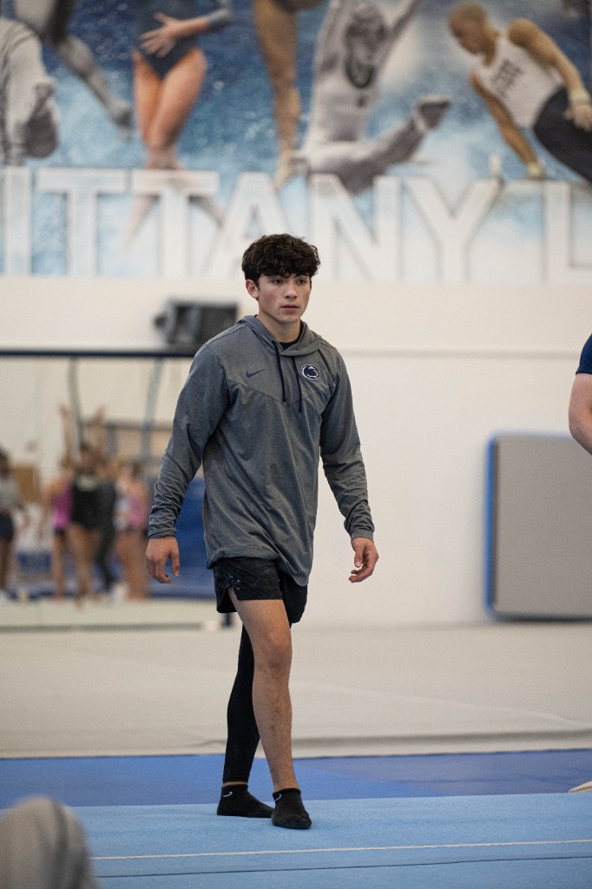
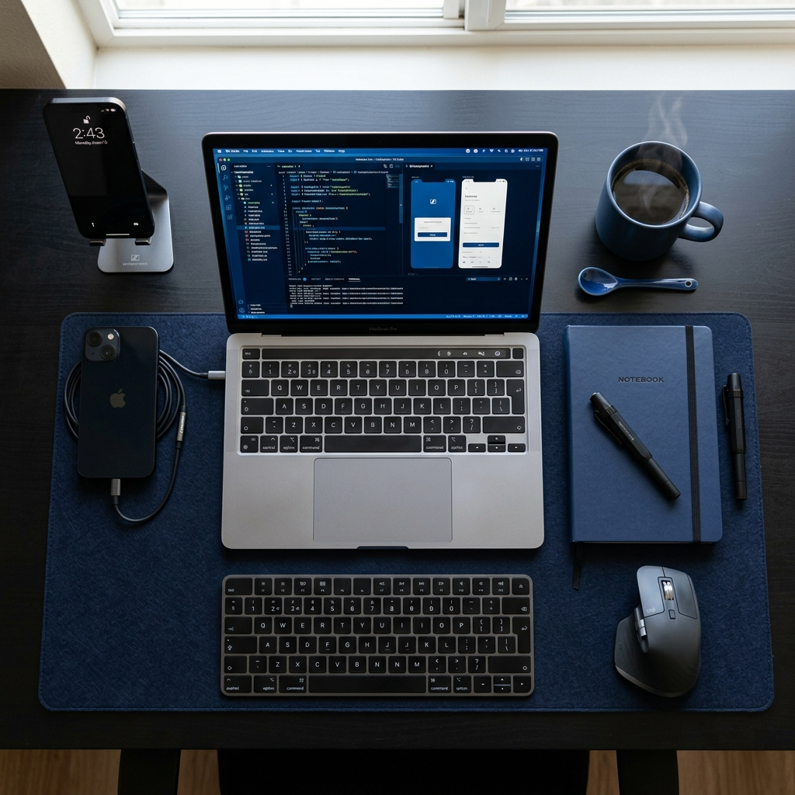

The Evolution of NIL Strategy
Exploring how name, image, and likeness rights are transforming the modern career paths for collegiate athletes today...
Read Article →Leveraging the intersection of technological innovation and elite athletic discipline.
View My Insights
I am a student-athlete at Penn State University, majoring in Information Science and Technology. As a member of the Men’s Gymnastics team, I balance the rigorous demands of elite athletics with a passion for digital innovation.
My journey, defined by championships and resilience, is about growing the sport through authentic storytelling. I leverage my IST background to create a unique digital footprint that reflects my professional values and expertise.

Exploring how name, image, and likeness rights are transforming the modern career paths for collegiate athletes today...
Read Article →
A comprehensive guide on using information technology to analyze gymnastics metrics and enhance competitive athletic performance...
Read Article →
How personal branding and the experience of overcoming injuries impact the long-term professional recruitment process for graduates...
Read Article →